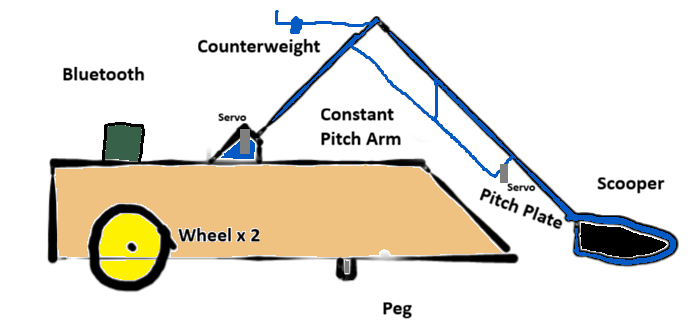
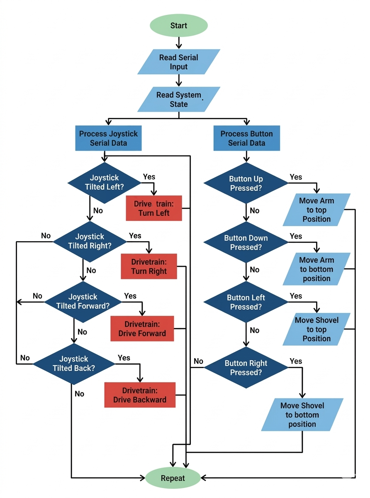
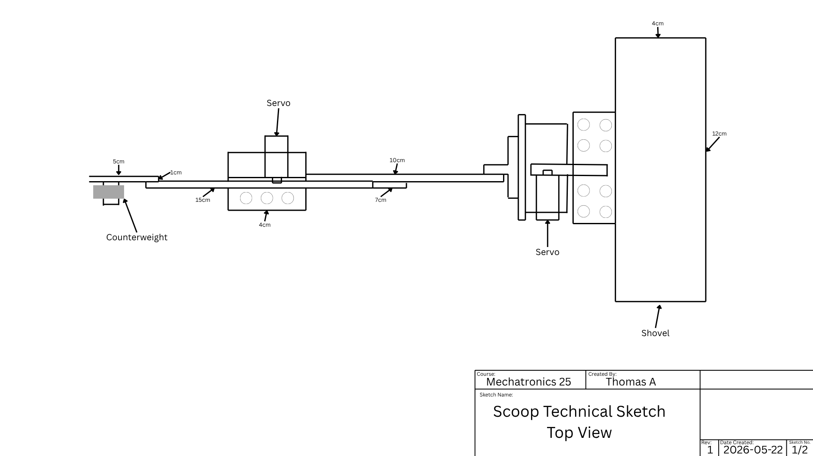
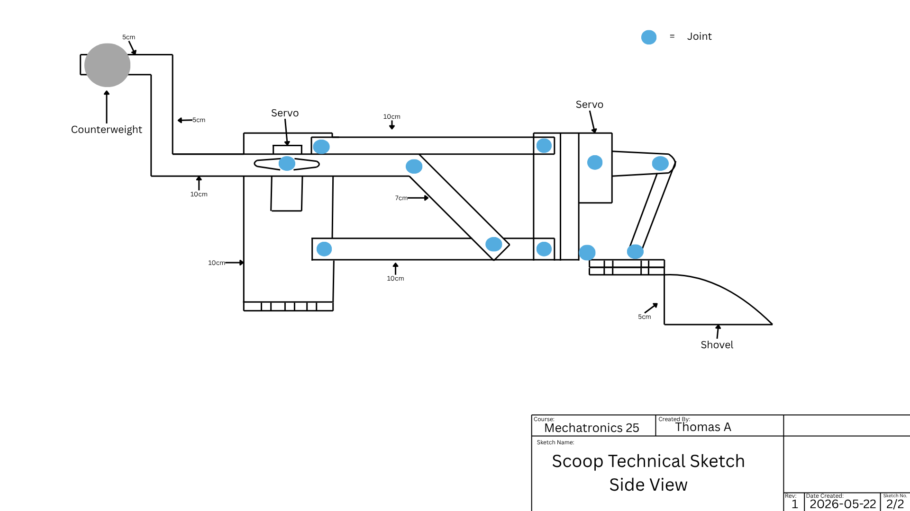
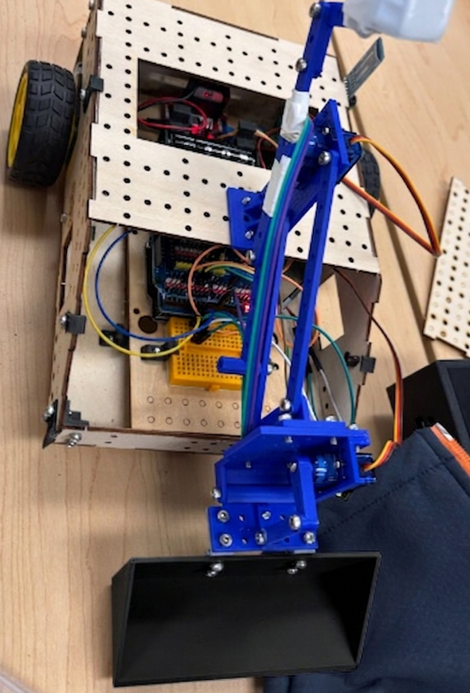
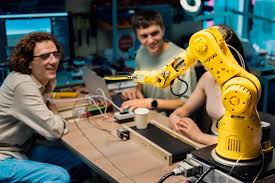

Our task for our rover recovery mission is to navigate through a wildfire zone. Our challenges include putting out fires that are simulated through five separate candles that we need to put out, along with saving five animals from the disaster that is simulated through carrying plastic toy animals from the field into a designated "safe zone".
Our Rover Recovery Task

Robot Sketch

Flowchart


Engineering Schematics

Final Rover Image
Arm:
Two Rear Wheels:
TBB Controller + Driver Assistance
Key Design Features
- Standard Wheels - Basic Movement and Slow - Wheels slipped on turns and smooth angles
- Servo horns attached to the wheels (with rubber bands) - added grip and traction to the wheels - much better grip and reduced slipping on the sand
Testing
TBB Joystick Code
/**
* File: tBB_Joystick_Base_Code.ino
* Author: Matthew Allwright, theBasicBot
* Copyright: 2023
*
* Description:
* This file serves as an example for robots controlled by theBasicBot's ESP32-based controller.
*/
/* Includes ------------------------------------------------------------------------------------- */
#include "controller_handling.hpp" //include the controller code
#include "motor_control.hpp" //include the motor code
#include "servo_dyck.hpp"
#include "sensors.hpp"
/* Variables ------------------------------------------------------------------------------------ */
static Controller controller = {};
/* Setup and Loop ------------------------------------------------------------------------------- */
void setup() {
// Setup serial
Serial.begin(9600);
Serial.print("tBB Joystick Base Code");
Serial.print(" | VER 2.3");
Serial.println(" | Mar 15, 2024");
// NOTE: This serial port is shared between both the BLE adapter (e.g., HM-10 module), and the
// Serial Monitor that is available when you connect the Arduino to a computer. This means if you
// print anything to the serial, it will go to BOTH the computer and the controller. This should
// be fine, because the controller doesn't currently parse any input over BLE.
setupMotors();
setupServos();
setupSensors();
}
void loop() { //loop function
/* ---------------------------------- */
/* Update Controller */
/* ---------------------------------- */
controller.update();
/* ---------------------------------- */
/* Control Robot */
/* ---------------------------------- */
// any functions that will be called directly by a button press must be included here
controlServo1(controller); //arm servo movement function
controlServo2(controller); //shovel servo movement function
controlMotors(controller); //wheel motor movement function
sensorLoop(); //sensor loop function
int forward = -1 * (controller.joyRightX); // forward/back
int turn = -1 * (controller.joyLeftY); // turning
int leftPower = forward + turn; //update left motor power
int rightPower = forward - turn; //update right motor power
setLeftMotor(leftPower); //give new power value to left motor
setRightMotor(rightPower); //give new power value to right motor
}
Commented Code
Controller_handling.hpp
#pragma once
/**
* File: controller_handling.hpp
* Author: Matthew Allwright, theBasicBot
* Copyright: 2023
*
* Description:
* This file contains the class definition of a controller object, and defines the methods to handle
* data received from the controller over BLE.
*/
/* Config --------------------------------------------------------------------------------------- */
/**
* @brief Uncomment this macro to enable debugging features. These can help you figure out if
* anything is going wrong, but may reduce the performance of the program.
*/
// #define DEBUG
/* Types ---------------------------------------------------------------------------------------- */
class Controller {
protected:
static constexpr size_t kMessageSize_B = 7;
uint8_t rxBuffer[kMessageSize_B] = {};
size_t numRxBytes = 0;
static constexpr uint8_t kJoystickMinimum = 0;
static constexpr uint8_t kJoystickMiddle = 127;
static constexpr uint8_t kJoystickMaximum = 254;
// Increase this slightly if the robot is driving (or its motors are whining) without moving the
// joystick
static constexpr uint8_t kJoystickDeadzone = 25;
//change raw joystick input into a usable value for movement
int8_t parseJoystickValue(const uint8_t aAxis) {
//define value for negative joystick movement
if (aAxis <= kJoystickMiddle - kJoystickDeadzone) {
return map(aAxis, kJoystickMinimum, kJoystickMiddle + kJoystickDeadzone, -100, 0);
//define value for positive joystick movement
} else if (aAxis >= kJoystickMiddle + kJoystickDeadzone) {
return map(aAxis, kJoystickMiddle + kJoystickDeadzone, kJoystickMaximum, 0, 100);
//return if no joystick value (no input)
} else {
return 0;
}
}
public:
/* ---------------------------------- */
/* Basic + Advanced Controller */
/* ---------------------------------- */
// Right button bank
boolean btnRightUp;
boolean btnRightRight;
boolean btnRightDown;
boolean btnRightLeft;
// Middle button bank
boolean btnMidLeft;
boolean btnMidRight;
// Left joystick
int8_t joyLeftX; // -100 to +100 (left to right)
int8_t joyLeftY; // -100 to +100 (down to up)
boolean btnLeftJoy;
/* ---------------------------------- */
/* Advanced Controller Only */
/* ---------------------------------- */
// Left button bank
boolean btnLeftUp;
boolean btnLeftRight;
boolean btnLeftDown;
boolean btnLeftLeft;
// Shoulder buttons
boolean btnLeftShoulder;
boolean btnRightShoulder;
// Right joystick
int8_t joyRightX; // -100 to +100 (left to right)
int8_t joyRightY; // -100 to +100 (down to up)
boolean btnRightJoy;
void update() {
// Collect individual bytes over BLE until a full message is received
if (numRxBytes != kMessageSize_B) {
while (Serial.available() > 0) {
uint8_t rxByte = Serial.read();
if (numRxBytes == 0 && rxByte != 0xFF) {
// Ignore input until we see the start of a message
} else if (numRxBytes < kMessageSize_B) {
// Append the byte to the message buffer
rxBuffer[numRxBytes++] = rxByte;
} else {
// We've somehow received too many bytes between start bytes.
// Clear the buffer and try again.
memset(rxBuffer, 0, sizeof(rxBuffer));
numRxBytes = 0;
}
}
delay(8);
} else {
#ifdef DEBUG
// Print received message to the console
char s[48] = {0};
snprintf(s, 47, "RX: [0x%02x][0x%02x][0x%02x][0x%02x][0x%02x][0x%02x][0x%02x]\n", rxBuffer[0],
rxBuffer[1], rxBuffer[2], rxBuffer[3], rxBuffer[4], rxBuffer[5], rxBuffer[6]);
Serial.println(s);
#endif
// Update the member variables to reflect the current state of the controller
btnLeftShoulder = (rxBuffer[1] & 0x01);
btnRightShoulder = (rxBuffer[1] & 0x02);
btnMidLeft = (rxBuffer[1] & 0x04);
btnMidRight = (rxBuffer[1] & 0x08);
btnRightJoy = (rxBuffer[1] & 0x10);
btnLeftJoy = (rxBuffer[1] & 0x20);
btnLeftUp = (rxBuffer[2] & 0x01);
btnLeftRight = (rxBuffer[2] & 0x02);
btnLeftDown = (rxBuffer[2] & 0x04);
btnLeftLeft = (rxBuffer[2] & 0x08);
btnRightUp = (rxBuffer[2] & 0x10);
btnRightRight = (rxBuffer[2] & 0x20);
btnRightDown = (rxBuffer[2] & 0x40);
btnRightLeft = (rxBuffer[2] & 0x80);
joyLeftX = parseJoystickValue(rxBuffer[3]);
joyLeftY = parseJoystickValue(rxBuffer[4]);
joyRightX = parseJoystickValue(rxBuffer[5]);
joyRightY = parseJoystickValue(rxBuffer[6]);
// Clear the message buffer to make room for the next message
memset(rxBuffer, 0, sizeof(rxBuffer));
numRxBytes = 0;
}
}
};
motor_control.hpp
#pragma once
/**llggggggggggggggggggg
* File: motor_control.hpp
* Author: Matthew Allwright, theBasicBot
* Copyright: 2023
*
* Description:
* This file contains constants and functions for controlling motors on the robot.
*/
/* Includes ------------------------------------------------------------------------------------- */
#include "controller_handling.hpp"
/* Constants ------------------------------------------------------------------------------------ */
// Motor control pins connected to H-Bridge motor driver
static constexpr int kLeftWheel_Backwards = 9;
static constexpr int kLeftWheel_Forwards = 5;
static constexpr int kRightWheel_Forwards = 6;
static constexpr int kRightWheel_Backwards = 11;
// Adjust either of these down (NOT ABOVE 255) if one motor is faster than the other
static constexpr unsigned int kMotorMaximum_Left = 255;
static constexpr unsigned int kMotorMaximum_Right = 255;
// Motor control configuration
static constexpr int kMotorMaxPercent = 100;
/* Variables ------------------------------------------------------------------------------------ */
static double motorLimitFactor = kMotorMaxPercent / 100.0f;
/* Functions ------------------------------------------------------------------------------------ */
void setupMotors() { //wheel setup function
pinMode(kRightWheel_Backwards, OUTPUT);
pinMode(kRightWheel_Forwards, OUTPUT);
pinMode(kLeftWheel_Forwards, OUTPUT);
pinMode(kLeftWheel_Backwards, OUTPUT);
}
//sets the limit for the maximum amount of power the motor can have
void setMotorLimit(const unsigned int aMax) {
if (aMax <= kMotorMaxPercent) {
motorLimitFactor = aMax / 100.0f;
} else {
motorLimitFactor = kMotorMaxPercent / 100.0f;
}
}
//moves the left motor
void setLeftMotor(const int aValue) {
//set new motor value
int motorVal = max(min(aValue, kMotorMaxPercent), -kMotorMaxPercent);
//check for value greater than 0 and move forward when detected
if (motorVal > 0) {
analogWrite(kLeftWheel_Forwards,
map(motorVal, 0, kMotorMaxPercent, 0, kMotorMaximum_Left * motorLimitFactor));
analogWrite(kLeftWheel_Backwards, 0);
//check for value less than 0 and move backwards when detected
} else if (motorVal < 0) {
analogWrite(kLeftWheel_Forwards, 0);
analogWrite(kLeftWheel_Backwards,
map(motorVal, 0, -kMotorMaxPercent, 0, kMotorMaximum_Left * motorLimitFactor));
//stop moving if no value is detected
} else {
analogWrite(kLeftWheel_Forwards, 0);
analogWrite(kLeftWheel_Backwards, 0);
}
}
//moves the right motor
void setRightMotor(const int aValue) {
//set new motor value
int motorVal = max(min(aValue, kMotorMaxPercent), -kMotorMaxPercent);
//check for value greater than 0 and move forward when detected
if (motorVal > 0) {
analogWrite(kRightWheel_Forwards,
map(motorVal, 0, kMotorMaxPercent, 0, kMotorMaximum_Right * motorLimitFactor));
analogWrite(kRightWheel_Backwards, 0);
//check for value less than 0 and move backwards when detected
} else if (motorVal < 0) {
analogWrite(kRightWheel_Forwards, 0);
analogWrite(kRightWheel_Backwards,
map(motorVal, 0, -kMotorMaxPercent, 0, kMotorMaximum_Right * motorLimitFactor));
//stop moving if no value is detected
} else {
analogWrite(kRightWheel_Forwards, 0);
analogWrite(kRightWheel_Backwards, 0);
}
}
sensors.hpp
#pragma once
/**
* File: sensors.hpp
* Author: Matthew Allwright, theBasicBot
* Copyright: 2023
*
* Description:
* This file is used to set up and control the integration of sensors with tBB.
*/
/* Includes ------------------------------------------------------------------------------------- */
#include "controller_handling.hpp" //include controller functions
/* Variables ------------------------------------------------------------------------------------ */
const int flamePin = 4; // the number of the flame pin
const int buzzer = 8;//set digital IO pin of the buzzer
int State = 0; // variable for reading status
/* Functions ------------------------------------------------------------------------------------ */
void setupSensors() { //setup sensors
pinMode(flamePin, INPUT); //initialize the pushbutton pin as an input:
pinMode(buzzer, OUTPUT);// set digital IO pin pattern, OUTPUT to be output
}
void sensorLoop(){ //sensor loop function
state = digitalRead(flamePin); //Read the state of the value:
if (state == LOW) { //Statement that checks if there is fire
tone(buzzer, 1000); //activate buzzer
}
else { //run if no fire
noTone(buzzer); //deactivate buzzer
}
}
servo.hpp
/* Includes ------------------------------------------------------------------------------------- */
#include //include servo library
#include "controller_handling.hpp" //include controller functions
/* Constants ------------------------------------------------------------------------------------ */
/* ---------------------------------- */
/* Servo 1 Config */
/* ---------------------------------- */
static Servo servo1; //define arm servo
static constexpr int kPinServo1 = 2; //arm servo pin
static uint8_t servo1Pos = 90; //servo initial position
static constexpr uint8_t kServo1MinDeg = 1; // Minimum 1
static constexpr uint8_t kServo1MaxDeg = 150; // Maximum 180
static constexpr uint16_t kServo1Speed = 2; //servo speed
/* ---------------------------------- */
/* Servo 2 Config */
/* ---------------------------------- */
static Servo servo2; //define shovel servo
static constexpr int kPinServo2 = 7; //shovel servo pin
static uint8_t servo2Pos = 120; //servo 2 initial position
static constexpr uint8_t kServo2MinDeg = 90; // Minimum 0
static constexpr uint8_t kServo2MaxDeg = 130; // Maximum 180
static constexpr uint16_t kServo2Speed = 20; //servo 2 speed
/* Functions ------------------------------------------------------------------------------------ */
void setupServos() { //servo setup
servo1.attach(kPinServo1); //define servo 1 pin
Serial.print(servo1Pos); //define servo 1 initial position
servo2.attach(kPinServo2); //define servo 2 pin
Serial.print(servo2Pos); //define servo 2 initial position
}
void controlServo1(const Controller& aController) { //servo 1 movement function
if (aController.btnRightUp && servo1Pos < kServo1MaxDeg) { //move servo if right up button pressed
servo1Pos += min(kServo1Speed, kServo1MaxDeg - servo1Pos); //update servo 1 position
} else if (aController.btnRightDown && servo1Pos > kServo1MinDeg) { //move servo the other way if right down button pressed
servo1Pos -= min(kServo1Speed, servo1Pos - kServo1MinDeg); //update servo 1 position
}
servo1.write(servo1Pos); //move servo 1
}
void controlServo2(const Controller& aController) { //servo 2 movement function
if (aController.btnRightLeft && servo2Pos < kServo2MaxDeg) { //move servo if right up button pressed
servo2Pos += min(kServo2Speed, kServo2MaxDeg - servo2Pos); //update servo 2 position
} else if (aController.btnRightRight && servo2Pos > kServo2MinDeg) { //move servo the other way if right down button pressed
servo2Pos -= min(kServo2Speed, servo2Pos - kServo2MinDeg); //update servo 2 position
}
servo2.write(servo2Pos); //move servo 2
}
The main thing we found that could be improved on our robot to make it more effective in completing the task was improving the robot's drivetrain. For this challenge, we settles on two wheels with added parts for grip and a front peg for our drive. Although we thought it would be sufficient for our drive, Its lack of power often led the robot to remain stuck in the thick dunes of sand that littered the field. To improve this for future attempts, it might be a good idea to either add extra motors for increased power, or implement a tank drive system that would allow us to have more control over the amount of power each side motor gets in order to avoid situations where the bot is unable to move.

Opportunities for Improvement
My main contribution to the team was handling all the programming aspects of the project. This included programming the controller inputs, the motor movement of the robot, the servo movement and sensor code among others. Not only was it my responsibility to build the code, but also debug it, finding errors and fixing them in order to make sure the robot was up to the task we set for it. Once we presented our challenge, I also produced the final code used on the robot, making sure it was fully commented.